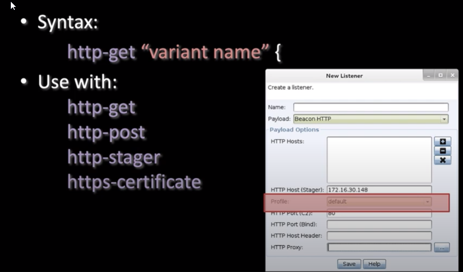

- Profile Variants
- 
- What do you do if you want to stand up multiple listeners each having different indicators
- the syntax allows for mutiple varients in the same profiles
- LINUX ONLY


- we can see our netbios encoded and attached -.jpg
- > GET /image/hdjkasfhadfdj-.jpg
- Modifyed Example
- notice the metadata and look at the output compared to the first
- the GET /image/foo.jpg is not encoded, the referer is


- output{
- prepend "<magic bytes of jpeg>"
- print;
- }